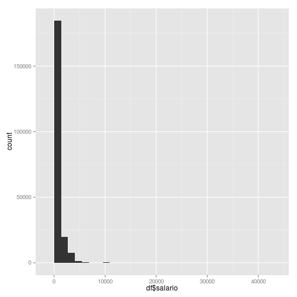

Since forever, governmental entities have been plagued by inneptitude and mediocrity. My theory is that this is due to the fact that the government underpays mosts of their employees and thus can only hire incompetent people.
Ivan Barria
Since forever, governmental entities have been plagued by inneptitude and mediocrity. My theory is that this is due to the fact that the government underpays mosts of their employees and thus can only hire incompetent people.
I had to write a scaper using python3. https://github.com/LaPrensa/defensoria-planilla
It uses asyncio :)
The data was exported to CSV using the \copy command from postgresql.
df <- read.csv('planilla.csv')
df$institucion <- as.factor(df$institucion)
df$salario <- as.numeric(gsub(',','',df$salario))
library(ggplot2)
qplot(df$salario)
## stat_bin: binwidth defaulted to range/30. Use 'binwidth = x' to adjust this.

Notice the large spread.
summary(df$salario)
## Min. 1st Qu. Median Mean 3rd Qu. Max.
## 0 500 710 920 981 40900
As expected, there are alot of low paying jobs.
If you would like a breakdown by government entity then visit my shinyapp http://ibarria.shinyapps.io/defensoria/